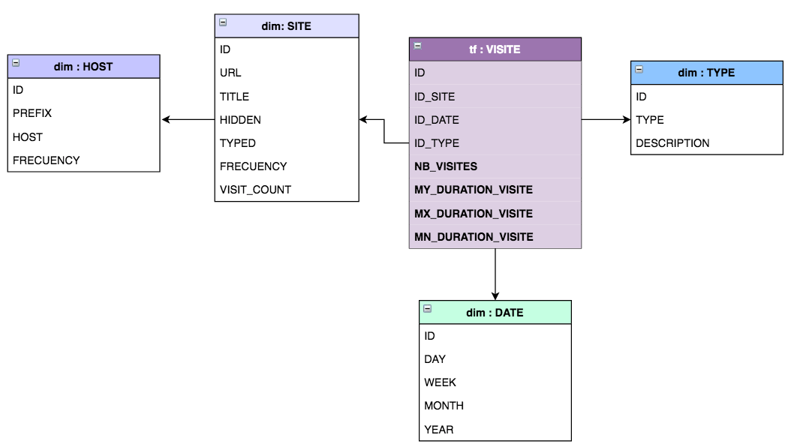

<div class="container-fluid">
  <div class="row">
    <div class="col-md-12">
      <h1 class="h1 db title"><span jhiTranslate="datawarehouse.title">DATAWAREHOUSE</span></h1>
      <h1 class="h1 db subtitle">
        <span jhiTranslate="datawarehouse.subtitle">ANALYSE DES HISTORIQUES DE RECHERCHE SUR FIREFOX</span>
      </h1>
      <div class="row">
        <div class="col-md-1">
        </div>
        <div class="col-md-5">
          <div class="card m-3" style="width: 45rem;height: 32rem">
            <div class="card-body">
              <p>
              </p>
            </div>
            <div class="card-footer info">Modèle de Données</div>
          </div>
          <div class="card info m-3" style="width: 30rem;">
            <div class="card-body">
              <h5 class="card-title">Informations</h5>
              <span class="card-text">Dernière mise à jour : {{ dateObj }}</span><br>
            </div>
          </div>
        </div>
        <div class="col-md-5">
          <div class="card info m-3" style="width: 50rem;">
            <div class="dropdown ml-3">
              <br>
              <div class="row">
                <div class="col">
                  <div class="d-inline-block" ngbDropdown>
                    <button class="btn btn-outline-primary" id="dropdownBasic1" ngbDropdownToggle>Choisir relation :</button>
                    <div aria-labelledby="dropdownBasic1" ngbDropdownMenu>
                      <button ngbDropdownItem>VISITS</button>
                      <button ngbDropdownItem>SITES</button>
                      <button ngbDropdownItem>HOSTS</button>
                      <button ngbDropdownItem>TYPES</button>
                      <button ngbDropdownItem>DATES</button>
                    </div>
                  </div>
                </div>
                <br>
              </div>
              <div>
                <br>
                <div class="container">
                  <table class="table table-hover table-sm ml-3">
                    <thead>
                    <tr>
                      <th scope="col">Id</th>
                      <th scope="col">Type</th>
                      <th scope="col">Description</th>
                    </tr>
                    </thead>
                    <tbody class="m-3">
                    <tr>
                      <th scope="row">1</th>
                      <td>Transition_link</td>
                      <td>Ce type de transition signifie que l utilisateur a suivi un lien et a obtenu une nouvelle fentre de niveau suprieur.</td>
                    </tr>
                    <tr>
                      <th scope="row">2</th>
                      <td>Transition_typed</td>
                      <td>Ce type de transition signifie que l utilisateur a tap l URL de la page dans la barre d URL ou l a selectionne dans
                        <br>les rsultats de la saisie semi-automatique de la barre d URL.
                      </td>
                    </tr>
                    <tr>
                      <th scope="row">3</th>
                      <td>Transition_bookmark</td>
                      <td>Cette transition est dfinie lorsque l utilisateur a suivi un signet pour accder la page.</td>
                    </tr>
                    <tr>
                      <th scope="row">4</th>
                      <td>Transition_embed</td>
                      <td>Ce type de transition est dfini lorsqu un certain contenu interne est charg. Cela est vrai pour toutes les images d une page
                        et le contenu de l iframe. C est galement vrai pour tout contenu dans un cadre, que l utilisateur ait cliqu ou non sur quelque
                        chose pour y accder.
                      </td>
                    </tr>
                    <tr>
                      <th scope="row">5</th>
                      <td>Transition_redirect_permanent</td>
                      <td>Dfini quand la transition tait une redirection permanente.</td>
                    </tr>
                    <tr>
                      <th scope="row">6</th>
                      <td>Transition_redirect_temporary</td>
                      <td>Dfini quand la transition tait une redirection temporaire.</td>
                    </tr>
                    <tr>
                      <th scope="row">7</th>
                      <td>Transition_download</td>
                      <td>Dfini lorsque la transition est un tlchargement.</td>
                    </tr>
                    <tr>
                      <th scope="row">8</th>
                      <td>Transition_framed_link</td>
                      <td>L usager a suivi un lien depuis une modal</td>
                    </tr>
                    <tr>
                      <th scope="row">9</th>
                      <td>Transition_reload</td>
                      <td>La page a ete rechargee</td>
                    </tr>
                    </tbody>
                  </table>
                </div>
              </div>
            </div>
          </div>
          <div class="col-md-1">
          </div>
        </div>
    </div>
  </div>
</div>
